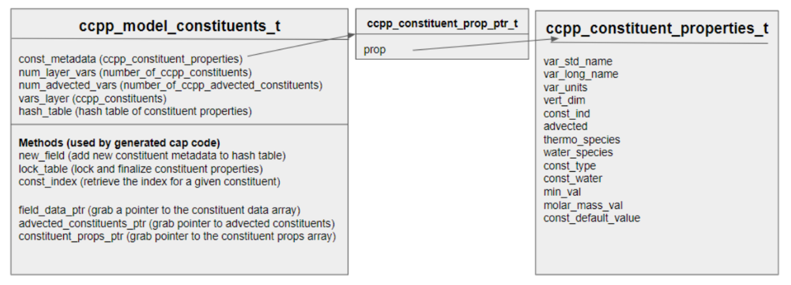

Constituents
Introduction/Overview
Some definitions to start (as written by a non-scientist, so there is more nuance than this!):
- A constituent is a physical quantity or substance that exists in the atmosphere
- A constituent can be advected, which means it is moved through the atmosphere by some sort of dynamical method
- The dynamical core (dycore) is the part of an atmosphere model (like CAM-SIMA) that advects the quantities over the underlying grid. Dynamical cores include:
- null/none - the null dycore does nothing and is used in CAM-SIMA to validate physics schemes
- spectral element (SE): the only dycore currently implemented in CAM-SIMA
- finite-volume cubed-sphere (FV3): not currently implemented in CAM-SIMA
- model for prediction across scales (MPAS): in progress
- The dynamical core (dycore) is the part of an atmosphere model (like CAM-SIMA) that advects the quantities over the underlying grid. Dynamical cores include:
- A constituent had additional properties, such as:
- water type: can be "dry", "wet", or "moist" (we can convert between any of these quantities - "dry" means that it's the "amount" of that constituent with respect to dry air
- mixing ratio type: can be "volume" or "mass"
- volume mixing ratio: constituent values are a ratio of how much of the constituent exists per mole of air (units = mol mol-1)
- mass mixing ratio: constituent values are the mass of the constituent per unit volume (kg m-3)
- molar mass: Molar mass of a given quantity; used in converting between mass mixing ratio and volume mixing ratio
- thermodynamically active: thermodynamically active constituents in CAM-SIMA can be found in
src/data/air_composition.F90 - minimum value: The scheme
qnegwill set constituent values that are less than the minimum to the minimum
CAM-SIMA constituent handling
Determining constituents
There are three ways to identify a quantity as a constituent in CAM-SIMA:
- Constituent is provided by host (CAM-SIMA):
- Host model constituents allow for constituents to be added as a constituent independent of the physics being run
- Host constituents are added in
cam_register_constituents(insrc/control/cam_comp.F90). Currently, we are always adding water vapor as a host constituent because it is expected by the SE dycore.
- Constituent is a build-time physics constituent in a CCPP-ized scheme:
- If a quantity is known to be a constituent at build-time, it is identified in the metadata for the scheme with:
advected = True
- If a quantity is known to be a constituent at build-time, it is identified in the metadata for the scheme with:
- Constituent is a run-time physics constituent in a CCPP-ized scheme:
- Sometimes, a scheme does not know what constituents it will require until run-time. In this case, an array of constituent properties (one for each needed constituent) is returned from the cam register phase. An example of how this works can be found in
src/physics/ncar_ccpp/musica/micm/micm.F90
- Sometimes, a scheme does not know what constituents it will require until run-time. In this case, an array of constituent properties (one for each needed constituent) is returned from the cam register phase. An example of how this works can be found in
Registering & Initializing Constituents
The registration and initializaiton of the constituent data array and the constituent properties object are done through calls to the generated CCPP cap.
- cam_ccpp_register_constituents: combines the three sources of constituents into one
ccpp_model_constituents_tobject- Called before the physics grid (which requires the number of constituents) is initialized
- cam_ccpp_initialize_constituents: initializes the data array within the
ccpp_model_constituents_tobject- Called after the physics grid is initialized (so we know the size of the array allocate)
- The array is initialized to (columns, levels, number of constituents)
Constituent Usage
Adding to the CCPP constituents object
Build-time (static) constituents
Build-time constituents are those that you know your scheme will always need. These constituents are treated almost as if they were normal arguments. To tell the CCPP Framework that a given argument is a constituent, you will add the following line to the metadata for that variable:
advected = True
This instructs the framework to handle that variable (you will not need to add it to the registry or anywhere else in the model). The framework will generate the code to allocate and initialize all constituents, and will also create and handle the associated tendency variable (which will be accessible via metadata with the standard name tendency_of_<const_stdname> and the metadata property constituent = true)
Run-time (dynamic) constituents
Run-time constituents are those that are conditional on the configuration of the model. If your scheme has runtime constituents, you will instantiate them in the register phase of your scheme. Example Fortran is below:
!> \section arg_table_<scheme>_register Argument Table
!! \htmlinclude <scheme>_register.html
subroutine <scheme>_register(constituent_props, filename, errmsg, errcode)
use ccpp_constituent_prop_mod, only: ccpp_constituent_properties_t
type(ccpp_constituent_properties_t), allocatable, intent(out) :: constituent_props(:)
character(len=256), intent(in) :: filename
character(len=512), intent(out) :: errmsg
integer, intent(out) :: errcode
integer :: const_idx
character(len=512), allocatable :: const_names(:)
! Read the file and determine what constituents are needed at runtime
! Allocate and populate const_names with those constituents
! Allocate the constituent properties array
allocate(constituent_props(size(const_names)), stat=ierr)
if (ierr /= 0) then
errcode = 1
errmsg = 'Failed to allocate "constituent_props"'
return
end if
! Instantiate each constituent
do const_idx = 1, size(const_names)
! Instantiate call may vary based on the properties of each runtime constituent
call constituent_props(const_idx)%instantiate( &
std_name = const_names(const_idx), &
long_name = const_names(const_idx), &
units = 'kg kg-1', &
vertical_dim = 'vertical_layer_dimension', &
min_value = 0.0_kind_phys, &
advected = .true., &
water_species = .true., &
mixing_ratio_type = 'wet', &
errcode = errcode, &
errmsg = errmsg)
if (errcode /= 0) then
return
end if
end do
end subroutine <scheme>_register
Note that only scalar variables may be passed into the register phase as the grid has not yet been set up when the CCPP register phases are called. The metadata for the above routine is below.
Standard name for runtime constituents variable
The only requirement for this standard name is that it is unique.
[ccpp-arg-table]
name = <scheme>_register
type = scheme
[ constituent_props ]
standard_name = dynamic_constituents_for_<scheme>
units = none
dimensions = (:)
allocatable = True
type = ccpp_constituent_properties_t
intent = out
[ filename ]
standard_name = filename_for_runtime_constituents
units = none
dimensions = ()
type = character | kind = len=256
intent = in
[ errmsg ]
standard_name = ccpp_error_message
long_name = Error message for error handling in CCPP
units = none
type = character | kind = len=512
dimensions = ()
intent = out
[ errcode ]
standard_name = ccpp_error_code
long_name = Error flag for error handling in CCPP
units = 1
type = integer
dimensions = ()
intent = out
Accessing the CCPP constituent object
Constituent values and properties can be accessed from the host side and from the physics in the following ways:
- Host side: constituents and properties can be accessed via the host model and dycore by way of the
cam_constituents.F90module, which is an interface to the CCPP cap, which is in turn an interface to the constituents object - Physics: the constituent array, constituent tendencies, and/or the constituent properties object are passed into a scheme via the following metadata (the local name and intent may vary):
[ q ]
standard_name = ccpp_constituents
units = none
type = real | kind = kind_phys
dimensions = (horizontal_loop_extent,vertical_layer_dimension,number_of_ccpp_constituents)
intent = in
[ qtend ]
standard_name = ccpp_constituent_tendencies
units = none
type = real | kind = kind_phys
dimensions = (horizontal_loop_extent,vertical_layer_dimension,number_of_ccpp_constituents)
intent = inout
[ const_props ]
standard_name = ccpp_constituent_properties
units = None
type = ccpp_constituent_prop_ptr_t
dimensions = (number_of_ccpp_constituents)
intent = in
CCPP Framework constituent handling
This section can be removed when constituents are documented in the CCPP Framework documentation.
Constituent object (Fortran)
The constituent object (found in $CAM-SIMA/ccpp_framework/src/ccpp_constituent_prop_ mod.F90) is a flexible and extendable means of containing necessary constituent data for the framework. The primary object is ccpp_model_constituents_t.

This object, importantly, contains the following properties (for which there is metadata; CCPP standard name in parenthesis):
const_metadata(ccpp_constituent_properties)num_layer_vars(number_of_ccpp_constituents)num_advected_vars(number_of_ccpp_advected_constituents)vars_layer(ccpp_constituents)
The const_metadata property is of type ccpp_constituent_prop_ptr_t, which contains a pointer to a ccpp_constituent_properties_t object, as depicted above. This object contains all of the constituent properties for the constituents in the constituents array, with the same indices as the constituents array.
The ccpp_model_constituents_t type also contains a hash table of constituent properties for more efficient searching, as well as several methods used by the generated cap code. Some methods are highlighted below:
- new_field: add a new constituent’s set of metadata fields to the hash table
- lock_table: lock the constituent hash table and initialize the constituent array
- Initializes the constituent array to the default value specified for each constituent (min value held in constituent props array for each constituent)
- Packs the advected constituents at the front of the constituents array
- const_index: retrieves the constituent index for a constituent (provided the standard name)
Code generation (python)
The constituents-related code generation routines provide an interface to the constituents object. These routines can be found in $CAM-SIMA/ccpp_framework/scripts/constituents.py, primarily within the “write_host_routines” function. The (most often used) generated routines related to constituents are:
- <hostname>_ccpp_register_constituents
- <hostname>_ccpp_initialize_constituents
- <hostname>_ccpp_number_constituents
- <hostname>_constituents_array
- <hostname>_model_const_properties
- <hostname>_const_get_index
The routines above are generated during ./preview_namelists or ./case.build and can be found here: $CASE/bld/atm/obj/ccpp/cam_ccpp_cap.F90